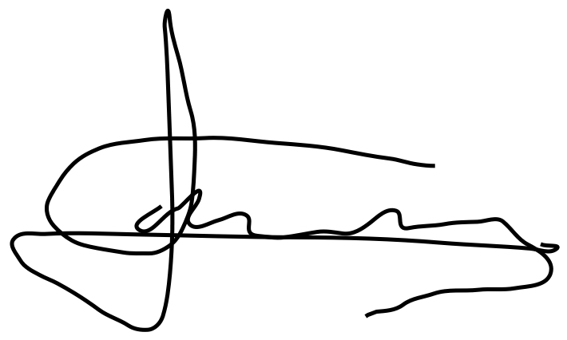

By Sylvain Chassang, CIO
The last twelve months have been busy, exciting, and productive. It is time to take stock of what has been achieved, and how we envision the future. I also take this opportunity to thank all the people – individual investors, professional asset managers, and seminar audiences – that have given us their time, and engaged with our team on the topic of asset allocation over the last year.
Our First Fund: Forever Dynamic Core!
I’m delighted to announce that Forever Funds SICAV - SIF is now ready for business. Year-long efforts
culminated early this June with the approval of the Luxembourg regulator, and a successful partnership
with Banque Degroof-Petercam. The fund is structured as an umbrella fund, which will let us develop a
full range of robust drawdown-controlled products, geared towards long-term investors. Banque
Degroof-Petercam will provide depositary, risk monitoring and compliance services. Ernst and Young
will serve as the fund’s auditor.
The first fund released under the Forever Fund umbrella is the Forever Dynamic Core fund. Dynamic Core is an inexpensive high-quality multi-asset fund focused on risk management. It invests in a basket of large, diversified and liquid indices that most investors already own. This allows us to provide weekly liquidity. Risk and returns are optimized using minimax drawdown-control: a dynamic approach that prevents large losses without sacrificing upside exposure. During adverse market conditions, the fund may keep a significant share of its assets in short-term treasuries or cash. Fund shares in Swiss Francs, Euros and US dollars are available.
The performance of the Dynamic Core Fund, backtested over the last 17 years, is an attractive one: 9% yearly returns in Swiss Francs, with a volatility of 7.5% and a Sharpe ratio of 1.1. It compares favorably with our reference index, the LPP 40, which delivered annual returns of 3% for a volatility of 7.5%. Importantly, Dynamic Core manages to limit worst-case losses much more effectively: worst-case drawdowns for Dynamic Core are at 7.5%, against 23% for the LPP 40.
Live performance of the fund’s investment strategy since June 2016 confirms the backtest (the corresponding Managed Account will be audited by EY). The account’s performance in Swiss Francs over the last twelve months is 7.1%, with a volatility under 4.5% and a Sharpe ratio of 1.75! Over the same period, our reference index, the LPP40 delivered a performance of 5.3%, with a volatility of 4.7% and a Sharpe ratio of 1.3. Provided this good performance continues to hold, the strategy will progressively increase its risk exposure until the 7.5% volatility target is reached.
What’s Next: Forever Dynamic Edge …
One of the really exciting applications of our robust risk management approach is to use it to take
exposure to attractive returns-premia beyond bond and equity risk, for instance, carry and reversal
premia. A limited exposure to such premia is included in Dynamic Core, and it has been successful in
live trading over the last year. As a result, we have decided to iniate a second subfund – Forever
Dynamic Edge – focused on harvesting high-performing returns premia in a robustly risk-managed
way.
A key advantage of minimax drawdown-control is that it allows us to take significant exposure to attractive premia, with the confidence that downside risk is well controlled. We expect a high Sharpe ratio from this strategy, and robust risk management gives us the confidence to exploit it at scale. Our plans for Dynamic Edge reflect this vision. Backtested performance since 2002 delivers yearly returns of 30% with a volatility around 15%. The strategy does not use direct leverage but purchases assets with some embedded leverage (e.g. ETFs). We initiated a managed account following this strategy mid-May, and when we feel sufficiently tested, we will initiate a corresponding fund open to investors.
The decision to take on greater volatility makes this fund particularly attractive to investors with greater appetite for risk, long investment horizons, as well as investors looking to generate higher performance on a small share of their portfolio. A-shares investors in Dynamic Core interested in Dynamic Edge should notify us at info@forever-funds.com to get priviledged access.
Team and Vision.
Forever is an ambitious project: We intend to provide high-performance investment solutions to
long-term investors for the next 30 years. The most satisfying achievement of the last twelve months
has been putting together a team that could carry out this vision.
In this respect, I’m delighted to announce that Alice Wang and Martin Schmalz have both joined Forever as partners. They embody the values of excellence and long-term alignment which are at the heart of Forever’s value proposition.
Alice Wang, holds an engineering degree from Ecole Centrale Paris. She has stepped up to the role of CTO, leading the development of our data analysis and strategy evaluation platform. She contributes years of engineering and signal-processing experience acquired at Total and Société Générale.
Martin Schmalz, an Economics Ph.D. from Princeton University, and the NBD Bancorp Assistant Professor of Business Administration at the University of Michigan, has joined as co-CIO. Martin brings considerable expertise in asset pricing and risk-premium analysis. Importantly, Martin is entirely aligned with Forever’s objectives. As the son, grandson (and now father) of industrial entrepreneurs, he has long thought about the risks, challenges of intergenerational investment.
Together, we are building Forever to serve the long-run investment objectives of our families and
yours.
Sylvain Chassang
